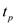
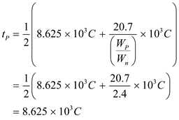
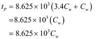

Refer to Figure 13.24 in the text book for the inverter circuit used for analyzing the propagation delay.
(a)
The simplified expression for the capacitance  is,
is,

Thus, the expression for the capacitance when is,
.
Refer to Figure 13.24 in the text book for the inverter circuit used for analyzing the propagation delay.
(a)
The simplified expression for the capacitance is,
Thus, the expression for the capacitance when is,
.
(b)
Determine the value of  when .
when .
Determine the value of  when
when  .
.
Determine the high to low propagation delay,  .
.
Determine the low to high propagation delay,  .
.
Thus, the expressions for propagation delays are,
.
When the propagation delay  is,
is,
Substitute in the expression for  .
.
Thus, the expression for  is,
is,
.
(d)
The ratio, is selected such that .
Equate the two delays.

Determine the value of by substituting for .
Substitute for  .
.
Thus, the expression for propagation delay is,
.
(e)
(i)
Determine  when for
when for  determined in part (c).
determined in part (c).
Thus, the propagation delay  is .
is .
 when
when  for
for  determined in part (d).
determined in part (d).
Thus, the propagation delay  is .
is .
(e)
(ii)
Determine  when
when  for
for  determined in part (c).
determined in part (c).
Thus, the propagation delay is .
Determine  when for
when for  determined in part (d).
determined in part (d).

Thus, the propagation delay  is .
is .